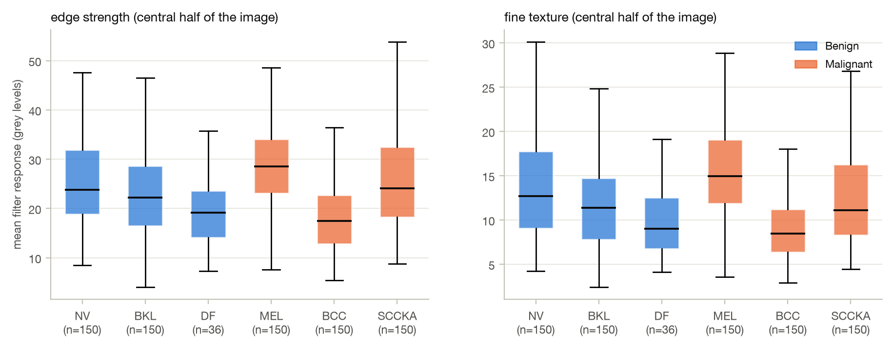
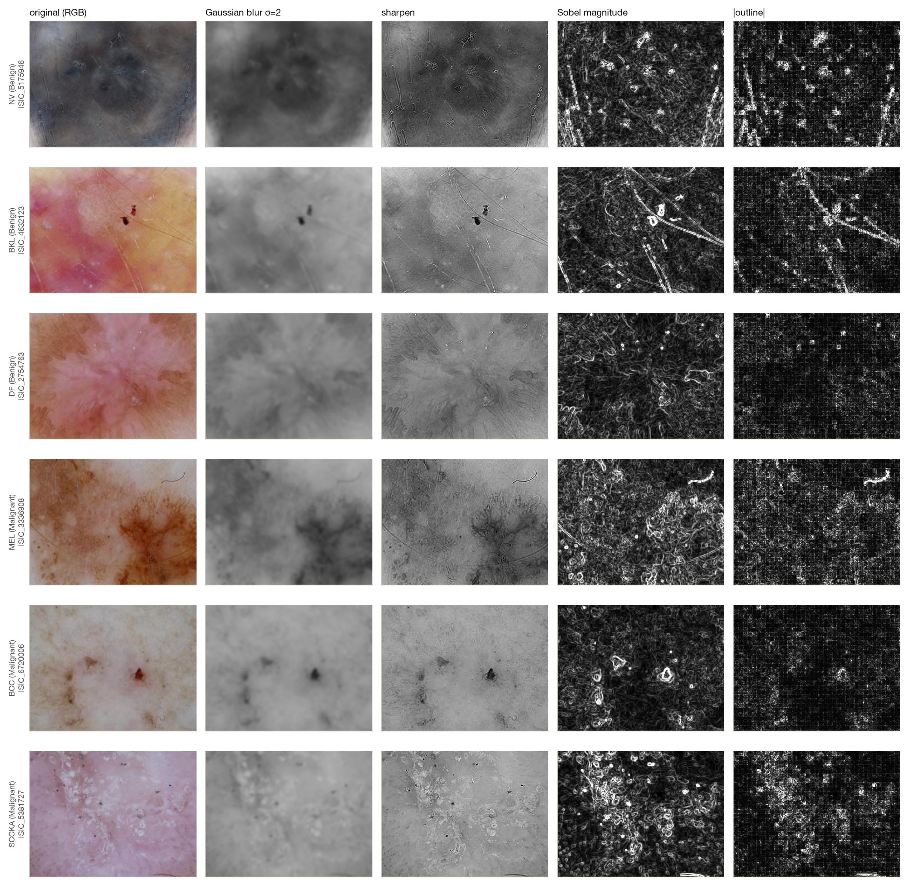
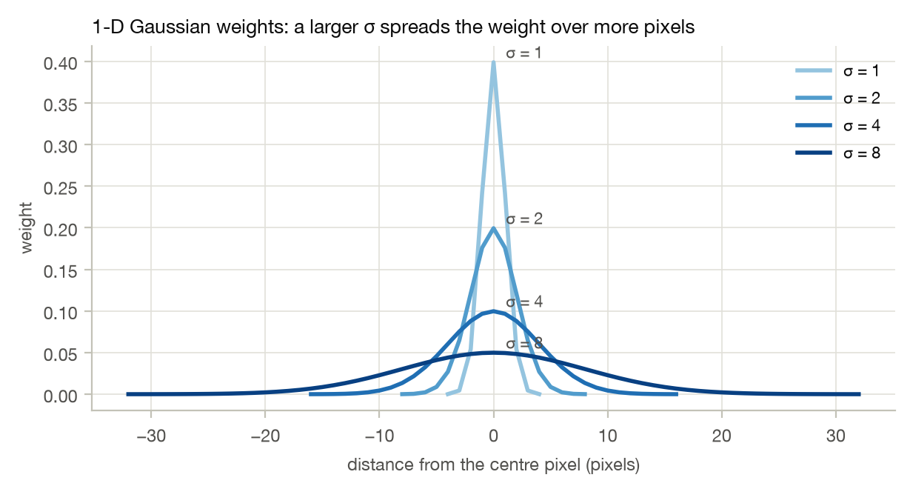
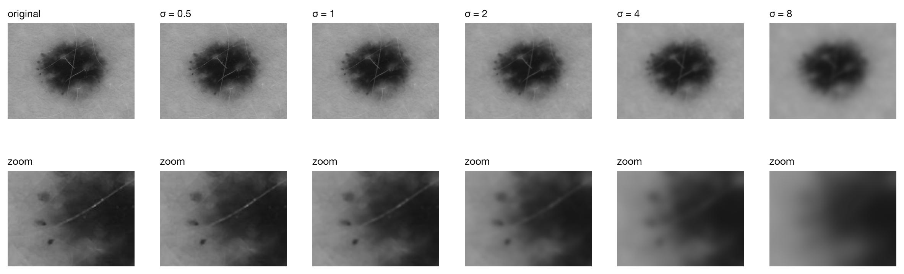
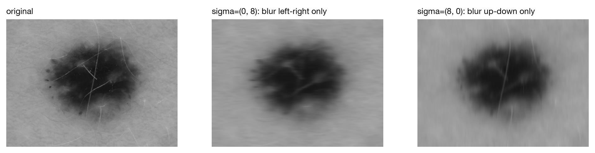
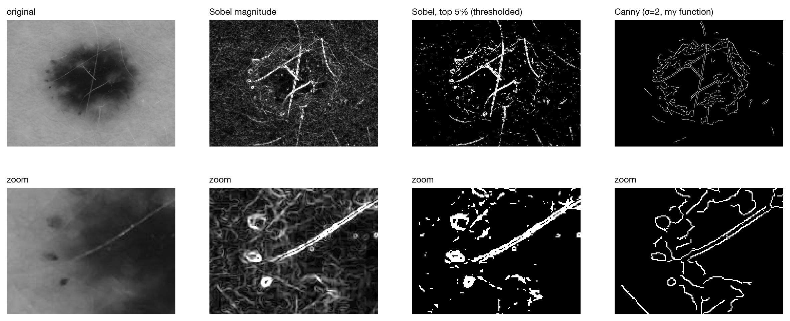
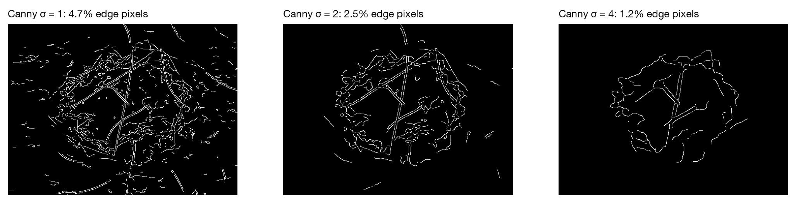

1. Filters on lesions from different diagnosis classes
Apply a set of filters to different MILK10k images from different diagnosis classes. Do edges or
textures look visually different between malignant and benign lesions?
Method. 786 dermoscopic training images (one per lesion): 150 each of nevus (NV), benign keratosis (BKL),
melanoma (MEL), basal cell carcinoma (BCC) and squamous cell carcinoma (SCCKA), plus all 36 dermatofibromas (DF).
Filters: Gaussian blur, sharpen, Sobel magnitude and outline. On the central half of each image (where the lesion is)
I measured the edge strength (mean Sobel magnitude), the fine texture (mean |outline|) and the
contrast (standard deviation). AUC = probability that an image of the first group has a higher value
than one of the second (0.5 = no difference).
Comparison
edge strength AUC
fine texture AUC
contrast AUC
Malignant vs. Benign (all 6 diagnoses)
0.51 (p = 0.5)
0.50 (p = 1)
0.46
Melanoma vs. nevus
0.63 (p = 8·10⁻⁵)
0.63 (p = 2·10⁻⁴)
0.44 (p = 0.09)
BCC vs. nevus
0.27
0.28
0.11

Edge strength and fine texture per diagnosis (boxes = middle 50% of images, line = median).

A typical image per diagnosis (edge strength closest to the class median), central half. Sobel and |outline| share one grey scale across rows: brighter = stronger edges / more texture.
Not as a simple Benign vs. Malignant split, but yes for specific diagnoses.
Benign vs. Malignant (pooled): no difference. AUC 0.51 for edge strength and 0.50 for fine texture (p = 0.5
and 1). "Malignant" mixes opposite cases that cancel out: BCC is the smoothest class (median edge strength
17.5, the lowest) and melanoma the most textured (28.5, the highest).
Melanoma vs. nevus (both melanocytic, the clinically important pair): melanomas have stronger edges and
more fine texture (median 28.5 vs. 23.8 and 14.9 vs. 12.7; AUC 0.63 for both, p < 0.001), while their overall
contrast is the same (AUC 0.44, p = 0.09). The difference is in the lesion's structure (more and sharper local
changes), not just a darker lesion. In the typical examples the melanoma row has the brightest Sobel and outline
maps on the shared scale (edge strength 28.2, texture 15.1).
BCC vs. nevus: BCCs have weaker edges (AUC 0.27), but above all much lower contrast (AUC 0.11). In
grayscale a BCC is a faint, low-contrast lesion, so all its edge maps are dark.
Caveat. AUC 0.63 still means a large overlap: a melanoma has a higher edge strength than a random nevus only
63% of the time. One hand-made filter statistic is a weak feature on its own. Hairs, lighting and image contrast
also change it. Telling the classes apart needs many features combined (Session 5) or filters learned from the
data (CNN).
2. Gaussian blur: what sigma controls
Read the scipy.ndimage.gaussian_filter documentation and identify what the sigma
parameter controls. Experiment with different values of sigma and observe the effect.
From the documentation (SciPy 1.17).sigma: "Standard deviation for Gaussian kernel. The
standard deviations of the Gaussian filter are given for each axis as a sequence, or as a single number, in which case
it is equal for all axes." The kernel is cut at truncate = 4 standard deviations (radius
round(truncate·sigma), size 2·radius + 1), and the 2-D filter is computed as one 1-D filter
per axis.

1-D Gaussian weights for σ = 1, 2, 4, 8.

Lesion ISIC_0073863 (the lesion used in class) blurred with increasing σ; bottom row: zoom on the left border.
σ
0 (original)
0.5
1
2
4
8
kernel size
–
5×5
9×9
17×17
33×33
65×65
edge strength left
100%
91%
72%
50%
34%
25%

sigma as a sequence: one standard deviation per axis.
sigma is the standard deviation of the Gaussian kernel, in pixels; it sets the scale of the blur. It can be
one value or one value per axis.
A larger σ gives a wider bell (kernel-profile figure): the weight is spread over more pixels and the centre
pixel counts less. With the default truncate=4.0 the kernel grows from 5×5 (σ = 0.5) to 65×65 (σ = 8).
So each output pixel averages a larger neighbourhood, and structures smaller than about σ are averaged away.
On lesion ISIC_0073863 the remaining edge strength is 91% at σ = 0.5, 72% at σ = 1, 50% at σ = 2, 34% at
σ = 4 and 25% at σ = 8.
Small σ (0.5–1) removes pixel-level noise but keeps most of the lesion's detail. Large σ (4–8)
keeps only the large-scale structure, i.e. the dark lesion against the skin; the fine internal structure is gone.
σ per axis: sigma=(0, 8) blurs only left ↔ right and sigma=(8, 0) only up ↔ down, which stretches the image
into streaks along one direction.
The documentation's description is exact: a 2-D kernel built from the Gaussian formula with radius round(4σ)
reproduces gaussian_filter to 10⁻¹². The filter is separable, i.e. computed as one 1-D pass per axis.
In practice σ is chosen from the size of the details to ignore. It is also the first step of Canny (Part 3),
where it decides which scale of edges is found.
3. Canny edge detection, implemented from scratch
Read about the Canny edge detector and implement it in Python as a function. Apply your function
to one MILK10k image and compare the result with a Sobel edge detector. Briefly describe the main differences.
Implementation (function canny(image, sigma=2.0, low=0.80, high=0.95) in the notebook), in
Canny's five steps: (1) Gaussian smoothing with σ; (2) Sobel gradient magnitude and direction; (3) non-maximum
suppression, keeping a pixel only if it is the largest of its two neighbours along the gradient direction (rounded to
0°, 45°, 90°, 135°); (4) double threshold, with strong edges in the top 5% of the gradient and weak edges in the top
20%; (5) hysteresis, keeping the weak pixels connected to a strong one. Applied to lesion ISIC_0073863.

Sobel magnitude, Sobel thresholded at the top 5%, and my Canny (σ = 2); bottom row: zoom on the left border.
Sobel, top 5%
Canny (σ = 2)
edge pixels (% of the image)
5.06%
2.50%
connected pieces
1,099
171
median piece size
3 px
28 px
isolated dots (1–2 px)
545
10

Canny with σ = 1, 2, 4 (same thresholds).
My canny agrees with skimage.feature.canny (97% of edge pixels within 1 pixel, in both directions, and almost
the same number of edge pixels: 2.50% vs. 2.46%).
Output. Sobel gives a grey-level map: how strong the change is at every pixel. Canny gives a binary
map: edge or not.
Thickness. Sobel edges are thick bands several pixels wide, because the gradient is high on both sides
of an edge. Canny keeps only the ridge (non-maximum suppression), so its edges are 1-pixel lines. At the same
top-5% level, thresholded Sobel marks 5.06% of the pixels and Canny 2.50%.
Continuity and noise. Thresholded Sobel falls apart into 1,099 pieces (median 3 pixels), 545 of them
isolated 1–2-pixel dots from texture, noise and JPEG blocks. Thanks to the Gaussian smoothing and hysteresis,
Canny gives 171 connected contours (median 28 pixels) with only 10 isolated dots. The lesion outline and its
internal structures become continuous lines.
Control. Sobel is a fixed 3×3 scale, and any threshold has to be chosen afterwards. Canny has a scale (σ)
and two thresholds: σ = 1 marks 4.7% of the pixels in 396 pieces (fine internal detail), σ = 2 2.5% in 171, and
σ = 4 1.15% in 76 (mostly the main outlines).
Relation and cost. Sobel is step 2 inside Canny. Canny adds smoothing, thinning and connectivity, which
costs more computation but gives a cleaner, ready-to-use edge map.
For the project. Canny's clean, connected contours suit measuring the shape of the lesion border (border
irregularity). Sobel's magnitude suits texture statistics such as the mean edge strength used in Part 1.